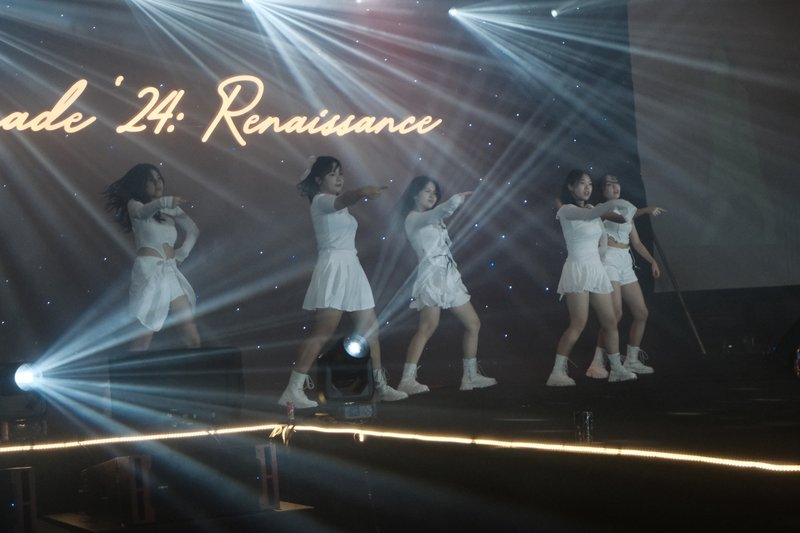

Events · Album 14 / 14
A stage show with dance performances, shot at ISO 4000 under the stage lights. Move your mouse to light up the stage.

Want photos like these? DM me on Instagram or call 0490 324 875.